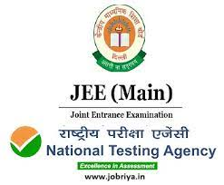

Joint Entrance Examination (Main)
JEE (Main) 2021
The Joint Entrance Examination (JEE Main) comprises of two papers.
The Paper1 is conducted for admission to Undergraduate Engineering Programs (B.E/B. Tech) at
NITs, IIITs, other Centrally Funded Technical Institutions (CFTIs), Institutions/Universities
funded/recognized by participating State Governments, as well as an eligibility test for
JEE (Advanced), which is conducted for admission to IITs.
The JEE (Main) is being conducted in multiple Sessions (February/March/April/May 2021) for
admissions in the next academic session. The candidates will thus benefit in the following ways:
- This will give multiple opportunities to the candidates to improve their scores in the
examination if they fail to give their best in the first attempt without wasting their whole academic year.
- In first attempt, the students will get a first-hand experience of taking an
examination and will know their mistakes which they can improve while attempting for the next time.
- This will reduce the chances of dropping a year and droppers would not have to waste a
full year.
- If anyone missed the examination due to reasons beyond control, then he/she will not
have to wait for one full year.
The student’s best of the 2021 NTA Scores will be considered for preparation of
Merit List/ Ranking.